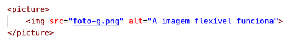
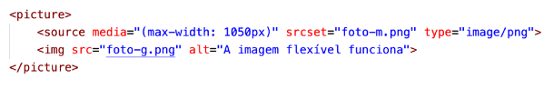

Imagens flexíveis no seu site.
Para gerar imagens de tamanhos diferentes no nosso site
iremos usar as tags <picture> e <source>
Nosso código ficará assim:

Dentro da tag picture iremos colocar a tag source (quantas forem necessarios)
para adicionar mais tamanhos de imagens.
Veja:

A tag source possuí 3 atributos:
- type vai indicar o media type da imagem que usamos.
- srcset vai configurar o nome da imagem que será carregada
quando o tamanho indicado for atingido.
- media indica o tamanho maximo a ser considerado
para carregar a imagem indicada no atributo srcset.
O resultado visual será esse:
Retornar à pagina inicial.